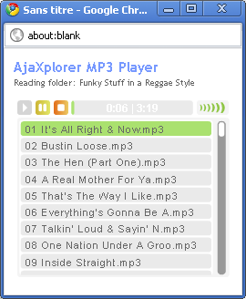

Implementation of the nice Dewplayer of Alsacreations, for both reading a file directly inside the InfoPanel, and reading a whole folder when there are many mp3s in it. No configurations needed.
In the "actions", once an mp3 is selected, you can also select "Play whole folder" and get a mini player in an external window playing the whole current folder.
